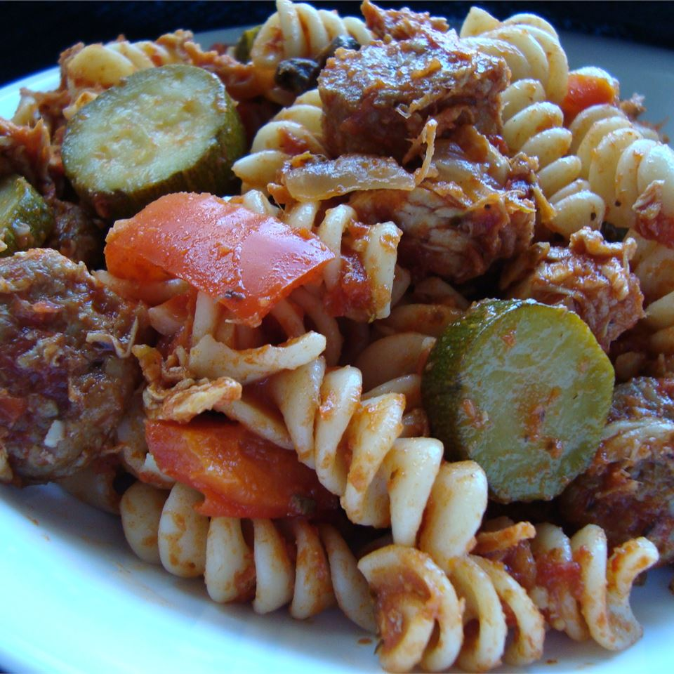

Chicken Sausage and Zucchini Pasta

I just threw this together one night, and we all loved it!
Quick and easy! Feel free to experiment with various types of pasta.
Ingredients
- 1 (16 ounce) package rotini pasta
- 4 Italian sausages sliced
- 2 skinless, boneless chicken breast
- 1 onion, chopped
- 1 clove garlic, minced
- 1 green bell pepper, diced
- salt to taste
- ground black pepper to taste
- 1 can diced tomatoes
- 1 cup spaghetti sauce
- 1 can sliced mushrooms
- 3 zucchinnis, thickly sliced
Directions
- In a large pot with boiling salted water cook rotini pasta until al dente. Drain.
- Meanwhile, in a large Dutch oven cook sliced Italian sausage until brown. Add cubed chicken and cook until no pink remains in either meat. Add onion, garlic, green bell pepper, Italian seasoning, salt and ground black pepper and stir together. Cover and simmer until vegetables are tender. Stir in tomatoes, spaghetti sauce, mushrooms, and zucchini. Simmer until zucchini is tender yet crisp.
- Toss cooked pasta with sauce. Serve warm.